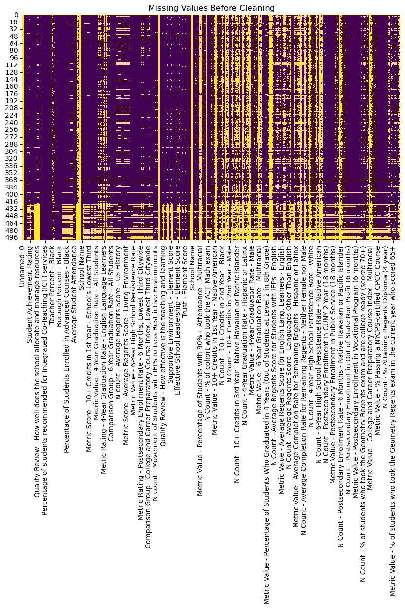
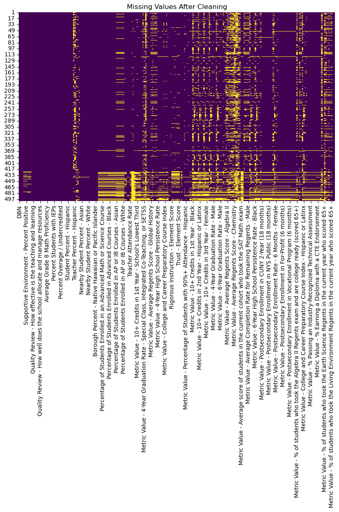

import pandas as pd
import numpy as np
import matplotlib.pyplot as plt
import seaborn as sns
from sklearn.preprocessing import OrdinalEncoder
from sodapy import Socrata
pd.set_option('future.no_silent_downcasting', True)Data Cleaning
Instructions
Note: You should remove these instructions once you have read and understood them. They should not be included in your final submission.
Remember: Exactly what do you on this page will be specific you your project and data. Some things might “make more sense” on other pages, depending on your workflow, for example, you might feel that normalization and scaling should be included in a later section, dealing with machine learning, rather than here, that is totally fine. Organize your project in the way that makes the most sense to you.
Suggested page structure
Here’s one suggested structure for organizing your technical pages. You can adjust this as needed:
Audience:Remember that these are written for a technical audience. Assume they have completed the DSAN program, but would appreciate refreshers of the important concepts.
- Introduction and Motivation: Briefly outline your plan. What are you doing on this page, and why? Provide context and explain the goals of your analysis.
- Overview of Methods: Give a concise explanation of the methods used. For example, if using K-Means clustering, describe what it is, how it works, the inputs and outputs, and key hyperparameters.
- Code: Include the code you used to implement your workflow.
- Summary and Interpretation of Results: Summarize your findings, interpret the results, and discuss their technical implications.
General comments:
- Iterative Process: Data cleaning is often not a one-time process. As your analysis progresses, you may need to revisit the cleaning phase, and re-run the code, to adjust to new insights or requirements.
- Clarity and Reproducibility: Ensure your documentation is clear and thorough. Others should be able to follow your steps and achieve the same results.
- Visualizations: Use before-and-after visualizations to illustrate the impact of your cleaning steps, making the process more intuitive and transparent.
By the end of this phase, your cleaned data should be well-documented and ready for further stages, such as Exploratory Data Analysis (EDA) and Machine Learning.
What to address
The following is a list of some of the things you should address on this page. This list is not exhaustive, and you should use your judgment to decide what is most relevant to your project.
The Data Cleaning page of your portfolio is where you document the process of transforming your raw data into a usable format. Data cleaning is essential for ensuring the quality of your analysis, and this page should serve as a clear and reproducible guide for anyone reviewing your work. It also provides transparency, allowing others to trace the steps you took to prepare your data.
The following is a guide to help you get started with possible thing to address on this page .
- Description of the Data Cleaning Process: Explain the steps you took to clean and preprocess the data.
- Code Documentation: Provide the code used in the data cleaning process (link to GitHub or embed the code directly).
- Provide examples of data before and after cleaning: e.g. with df.head() or df.describe()
- Raw and Cleaned Data Links: Ensure your page links to both the original (raw) dataset and the cleaned dataset. (please keep organized and store the cleaned data in
data/processed-data, or similar location which doesn’t get synced to GitHub)
Possible things to include:
Introduction to Data Cleaning:
- Provide a brief explanation of the data cleaning phase, its importance in preparing the data for further analysis (EDA, modeling), and its iterative nature.
- Mention that data cleaning may need to be revisited as the project evolves and analysis goals change.
Managing Missing Data:
- Identify Missing Values: Explain how you identified missing data and where it occurred.
- Handling Missing Data: Describe how missing values were addressed (e.g., imputation, removal of rows/columns).
- Visualize Missing Data: Include visualizations (e.g., heatmaps) showing missing values before and after handling them.
Outlier Detection and Treatment:
- Identify Outliers: Describe the methods you used to detect outliers in the dataset.
- Addressing Outliers: Explain how outliers were treated (e.g., removal, transformation, or retaining them for analysis).
- Visualize Outliers: Use visualizations (e.g., box plots) to show how outliers were managed.
Data Type Correction and Formatting:
- Review Data Types: Summarize the types of variables (numerical, categorical, date-time, etc.) and ensure they are correctly formatted.
- Transformation: Document any transformations performed, such as converting date formats, handling categorical variables, or encoding labels.
- Impact of Changes: Briefly explain why these changes were necessary for accurate analysis.
Normalization and Scaling:
- Data Distribution Analysis: Check and discuss the distribution of numerical variables (e.g., skewness).
- Normalization Techniques: Describe any normalization or scaling techniques used (e.g., min-max scaling, z-score normalization).
- Before-and-After Visualizations: Provide visualizations comparing the data before and after scaling or normalization.
Subsetting the Data:
- Data Filtering: Explain any subsetting or filtering of the data (e.g., selecting quantitative or qualitative columns).
- Rationale: Justify why you chose to work with a particular subset of the data.
Start
Data Cleaning:
The data cleaning phase is a vital, and often extremely time consuming part of a machine learning project. It is important to use extra care in preparing the data for future EDA and modeling. As we explore the data more, we often uncover additional issues that need to be taken care of, especially when dealing with large datasets where identifying every issue upfront is impossible. This is why data cleaning is considered an iterative process and will probably need to be updated as the project progresses.
I relied on a NYC Public School’s School Quality Reports Educator Guide: High Schools 2022–231 as a data dictionary to understand what a lot of the columns were expressing and clean accordingly.
Managing Missing Data: According to the Educator Guide, metrics with fewer than the minimum number of students are not reported and do not contribute to the school’s ratings because of confidentiality considerations and the unreliability of measurements based on small numbers1. These are shown in the data as values of ‘N<15’ and ‘N<5’. We cannot impute 0 for these values since that would fasely discredit the school. Instead, I changed these values to NA and did not include them when processing.
In addition, to handle large amounts of missing data, I removed columns where greater than 50% of the data is missing. This helped to reduce size of the dataframe by removing 100+ columns which would not have been helpful to our analysis since it was missing too much.
- Identify Missing Values: Explain how you identified missing data and where it occurred.
- Handling Missing Data: Describe how missing values were addressed (e.g., imputation, removal of rows/columns).
Outlier Detection and Treatment:
- Identify Outliers: Describe the methods you used to detect outliers in the dataset.
- Addressing Outliers: Explain how outliers were treated (e.g., removal, transformation, or retaining them for analysis).
- Visualize Outliers: Use visualizations (e.g., box plots) to show how outliers were managed.
Data Type Correction and Formatting:
Before processing, the data types summary shows: | float64 | 346 | | object | 317 |
After processing and removing rows, the summary shows: | float64 | 224 | | object | 4 |
The remaining object columns are ‘DBN’, ‘School Name’, ‘District’, and ‘Borough’. We will keep these for EDA purposes.
I used sklearn’s ordinal encoder to encode the categorical values of quality review columns. The value provided were : ‘Developing’ ‘Well Developed’, ‘Proficient’. I encoded them in this order and handled unkown values as -1.
Converting all columns to numeric is essential for EDA to create plots and for modeling as regression will only take numeric values.
Normalization and Scaling:
- Data Distribution Analysis: Check and discuss the distribution of numerical variables (e.g., skewness).
- Normalization Techniques: Describe any normalization or scaling techniques used (e.g., min-max scaling, z-score normalization).
- Before-and-After Visualizations: Provide visualizations comparing the data before and after scaling or normalization.
Subsetting the Data:
- Data Filtering: Explain any subsetting or filtering of the data (e.g., selecting quantitative or qualitative columns).
- Rationale: Justify why you chose to work with a particular subset of the data.
I chose to work with this particular subset of the data becasue it retains the the information of the columns I am interested in exploring. I chose to drop columns that were too granular such as specific Regents subjects. In addition, some metric columns contained the same info as the ‘Metric Value’ columns that I kept, so I was able to get rid of N count, metric rating, metric score, comparison group, and positive response columns.
Code
Provide the source code used for this section of the project here.
If you’re using a package for code organization, you can import it at this point. However, make sure that the actual workflow steps—including data processing, analysis, and other key tasks—are conducted and clearly demonstrated on this page. The goal is to show the technical flow of your project, highlighting how the code is executed to achieve your results.
If relevant, link to additional documentation or external references that explain any complex components. This section should give readers a clear view of how the project is implemented from a technical perspective.
Remember, this page is a technical narrative, NOT just a notebook with a collection of code cells, include in-line Prose, to describe what is going on.
# Read in excel data
all_sheets = pd.read_excel('../../data/raw-data/202223-hs-sqr-results.xlsx', skiprows=3, nrows=506, sheet_name=None)# Concat 4 dicts of sheets
df = pd.concat(all_sheets.values(), axis=1)# pre cleaning df.head check
df.head()| Unnamed: 0 | Unnamed: 1 | Unnamed: 2 | DBN | School Name | School Type | Enrollment | Rigorous Instruction Rating | Collaborative Teachers Rating | Supportive Environment Rating | ... | N Count - % of students who took the US History Regents in the current year who scored 65+ | Metric Value - % of students who took the US History Regents in the current year who scored 65+ | N Count - % of students who took the Algebra I Regents exam in the current year who scored 65+ | Metric Value - % of students who took the Algebra I Regents exam in the current year who scored 65+ | N Count - % of students who took the Living Environment Regents in the current year who scored 65+ | Metric Value - % of students who took the Living Environment Regents in the current year who scored 65+ | N Count - % of students who took a Languages Other Than English Regents in the current year who scored 65+ | Metric Value - % of students who took a Languages Other Than English Regents in the current year who scored 65+ | N Count - % of students who took the Physics Regents in the current year who scored 65+ | Metric Value - % of students who took the Physics Regents in the current year who scored 65+ | |
|---|---|---|---|---|---|---|---|---|---|---|---|---|---|---|---|---|---|---|---|---|---|
| 0 | NaN | NaN | NaN | NaN | NaN | NaN | NaN | NaN | NaN | NaN | ... | NaN | NaN | NaN | NaN | NaN | NaN | NaN | NaN | NaN | NaN |
| 1 | NaN | NaN | NaN | 01M292 | Orchard Collegiate Academy | High School | 269.0 | Meeting Target | Exceeding Target | Meeting Target | ... | 49.0 | 0.612 | 51.0 | 0.451 | 52.0 | 0.615 | 32.0 | 0.969 | 1.0 | N<15 |
| 2 | NaN | NaN | NaN | 01M448 | University Neighborhood High School | High School | 485.0 | Exceeding Target | Exceeding Target | Exceeding Target | ... | 108.0 | 0.648 | 79.0 | 0.772 | 82.0 | 0.744 | 66.0 | 0.773 | 4.0 | N<15 |
| 3 | NaN | NaN | NaN | 01M450 | East Side Community School | High School | 389.0 | Exceeding Target | Exceeding Target | Exceeding Target | ... | 1.0 | N<15 | 1.0 | N<15 | 1.0 | N<15 | NaN | N<15 | NaN | N<15 |
| 4 | NaN | NaN | NaN | 01M539 | New Explorations into Science, Technology and ... | High School | 620.0 | Meeting Target | Meeting Target | Exceeding Target | ... | 94.0 | 0.894 | 45.0 | 0.889 | 46.0 | 0.957 | 100.0 | 0.87 | 121.0 | 0.595 |
5 rows × 663 columns
#Pre Cleaning data types
df.dtypes.value_counts()float64 346
object 317
Name: count, dtype: int64#make N<15 NA
df = df.replace('N<15', np.nan).infer_objects(copy=False)
df = df.replace('N<5', np.nan).infer_objects(copy=False)
#make values '<95%' as max 95%
df = df.replace('> 95%', int(0.95)).infer_objects(copy=False)# Pre Cleaning Missingness
plt.figure(figsize=(10, 6))
sns.heatmap(df.isnull(), cbar=False, cmap="viridis")
plt.title("Missing Values Before Cleaning")
plt.show()
#Handle Missingess
#remove columns that are missing > 50%
missingness = df.isna().mean()
# Filter columns with less than 75% missing values
df = df.loc[:, missingness < 0.5]#columns to remove by string
#Unnamed: remove NA columns
#N count / metric rating / metric score / comparison group: we just need metric value % columns, these give the same info
#positive responses: remove borough and city positive response columns - we just need element score for these metrics
string_check = "Unnamed|N count|metric rating|metric score|comparison group|positive responses"
df = df.loc[:, ~df.columns.str.contains(string_check, regex=True, case=False)]#drop duplicated columns
df = df.loc[:, ~df.T.duplicated(keep='first')]
#drop principal name, date of review, and School Type (they are all High Schools) columns
df = df.drop(columns=['Quality Review - Principal at Time of Review','School Type','Quality Review - Dates of Review'], axis=1)
#drop these columns with survey response questions, we have score columns for this
df = df.drop(columns=['Rigorous Instruction Rating','Collaborative Teachers Rating','Supportive Environment Rating','Effective School Leadership Rating','Strong Family-Community Ties Rating','Trust Rating','Student Achievement Rating'], axis=1)
#remove first row
df = df.iloc[1: , :]#use ordinal encoder to encode categorical quality review columns
# get columns with 'proficient' categories
proficient_cols = [col for col in df.columns if df[col].astype(str).str.contains('proficient', case=False).any()]
proficient_hierarchy = ['Developing', 'Well Developed', 'Proficient']
encoder = OrdinalEncoder(categories=[proficient_hierarchy] * len(proficient_cols), handle_unknown='use_encoded_value', unknown_value=-1)
#run encoder
df[proficient_cols] = encoder.fit_transform(df[proficient_cols])#extract District and Borough from DBN column - DBN: (##(District)X(Borough)###(School ID))
df = df.copy()
df['District'] = df['DBN'].str[0:2]
df['Borough'] = df['DBN'].str[2:3]#map borough name to value
borough_map = {'M': 'Manhattan', 'K': 'Brooklyn', 'X': 'Bronx', 'Q':'Queens', 'R':'Staten Island'}
df['Borough'] = df['Borough'].map(borough_map) #handle data types
# #convert rate % to float
df['Student Survey Response Rate'] = pd.to_numeric(df['Student Survey Response Rate'].str[:-1]) / 100
df['Teacher Survey Response Rate'] = pd.to_numeric(df['Teacher Survey Response Rate'].str[:-1]) / 100
df['Parent Survey Response Rate'] = pd.to_numeric(df['Parent Survey Response Rate'].str[:-1]) / 100
#convert all metric value columns to numeric
df.loc[:, df.columns.str.contains('Metric Value')] = df.loc[:, df.columns.str.contains('Metric Value')].apply(pd.to_numeric, errors='coerce')
#convert remaining columns
df['Metric Value - 4-Year Graduation Rate - Special Class, Integrated Co-Teaching, or SETSS'] = pd.to_numeric(df['Metric Value - 4-Year Graduation Rate - Special Class, Integrated Co-Teaching, or SETSS'])
df['Metric Value - 4-Year Graduation Rate - English Language Learners'] = pd.to_numeric(df['Metric Value - 4-Year Graduation Rate - English Language Learners'])#Post cleaning data check
df.dtypes.value_counts()float64 224
object 4
Name: count, dtype: int64#check remaining objects - keep these for EDA
df.select_dtypes(include=['object']).columnsIndex(['DBN', 'School Name', 'District', 'Borough'], dtype='object')#save processed df to csv
df.to_csv('../../data/processed-data/processed_df.csv')# post cleaning df.head check
df.head()| DBN | School Name | Enrollment | Rigorous Instruction - Percent Positive | Collaborative Teachers - Percent Positive | Supportive Environment - Percent Positive | Effective School Leadership - Percent Positive | Strong Family-Community Ties - Percent Positive | Trust - Percent Positive | Quality Review - How interesting and challenging is the curriculum | ... | Metric Value - % of students who took the Chemistry Regents in the current year who scored 65+ | Metric Value - % of students who took the English Regents exam in the current year who scored 65+ | Metric Value - % of students who took the Earth Science Regents in the current year who scored 65+ | Metric Value - % of students who took the Geometry Regents exam in the current year who scored 65+ | Metric Value - % of students who took the Global History Regents in the current year who scored 65+ | Metric Value - % of students who took the US History Regents in the current year who scored 65+ | Metric Value - % of students who took the Algebra I Regents exam in the current year who scored 65+ | Metric Value - % of students who took the Living Environment Regents in the current year who scored 65+ | District | Borough | |
|---|---|---|---|---|---|---|---|---|---|---|---|---|---|---|---|---|---|---|---|---|---|
| 1 | 01M292 | Orchard Collegiate Academy | 269.0 | 0.73 | 0.88 | 0.80 | 0.87 | 0.81 | 0.90 | 2.0 | ... | 0.524 | 0.770 | 0.622 | 0.556 | 0.783 | 0.612 | 0.451 | 0.615 | 01 | Manhattan |
| 2 | 01M448 | University Neighborhood High School | 485.0 | 0.83 | 0.93 | 0.86 | 0.94 | 0.85 | 0.95 | 1.0 | ... | 0.355 | 0.747 | 0.752 | 0.667 | 0.759 | 0.648 | 0.772 | 0.744 | 01 | Manhattan |
| 3 | 01M450 | East Side Community School | 389.0 | 0.82 | 0.89 | 0.81 | 0.89 | 0.92 | 0.92 | 1.0 | ... | NaN | 0.908 | NaN | NaN | NaN | NaN | NaN | NaN | 01 | Manhattan |
| 4 | 01M539 | New Explorations into Science, Technology and ... | 620.0 | 0.80 | 0.85 | 0.78 | 0.82 | 0.93 | 0.90 | 1.0 | ... | 0.842 | 0.975 | NaN | 0.895 | 1.000 | 0.894 | 0.889 | 0.957 | 01 | Manhattan |
| 5 | 01M696 | Bard High School Early College | 565.0 | 0.79 | 0.78 | 0.77 | 0.80 | 0.87 | 0.90 | 1.0 | ... | 0.521 | 0.927 | NaN | NaN | 0.871 | 0.925 | 0.667 | NaN | 01 | Manhattan |
5 rows × 228 columns
# post cleaning missingness check
plt.figure(figsize=(10, 6))
sns.heatmap(df.isnull(), cbar=False, cmap="viridis")
plt.title("Missing Values After Cleaning")
plt.show()